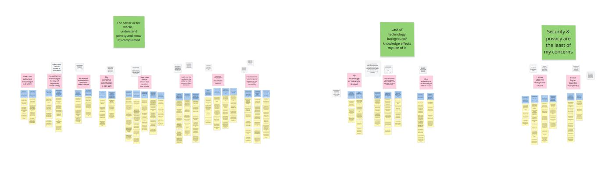
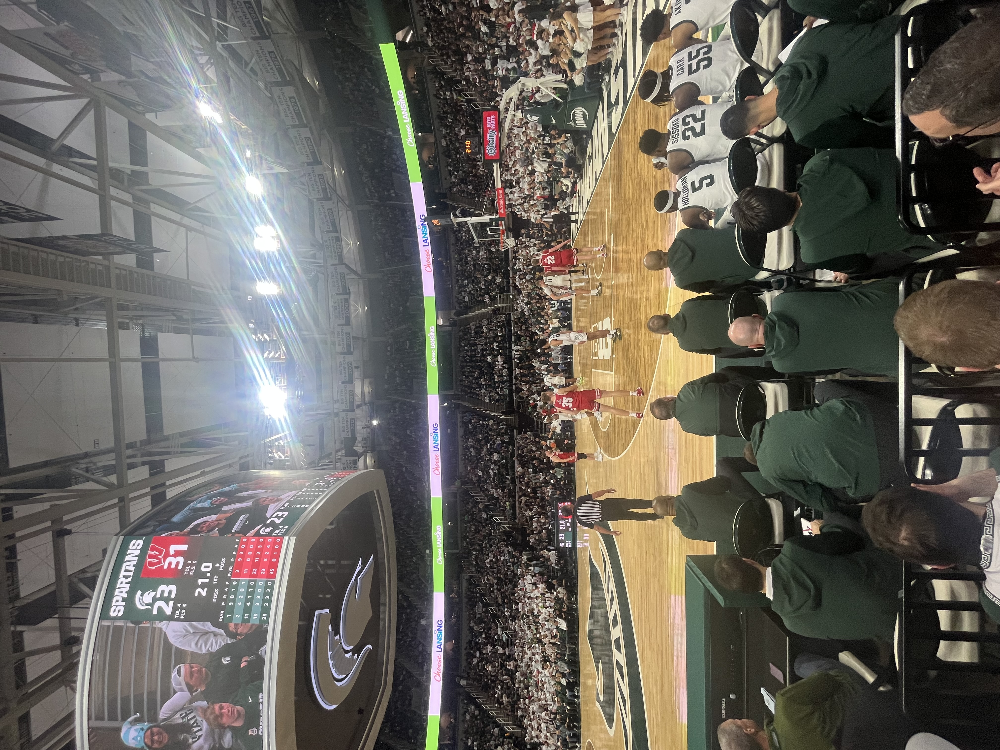
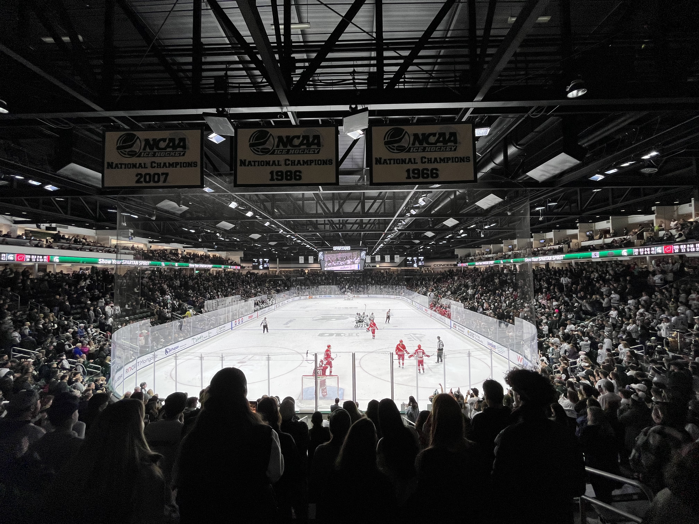
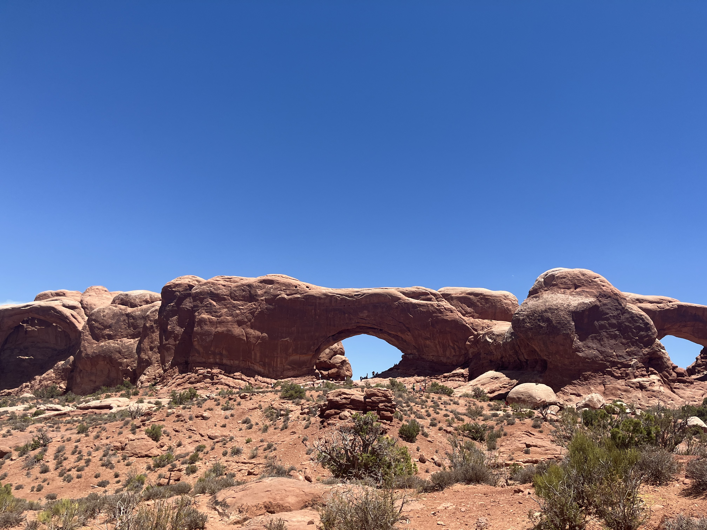
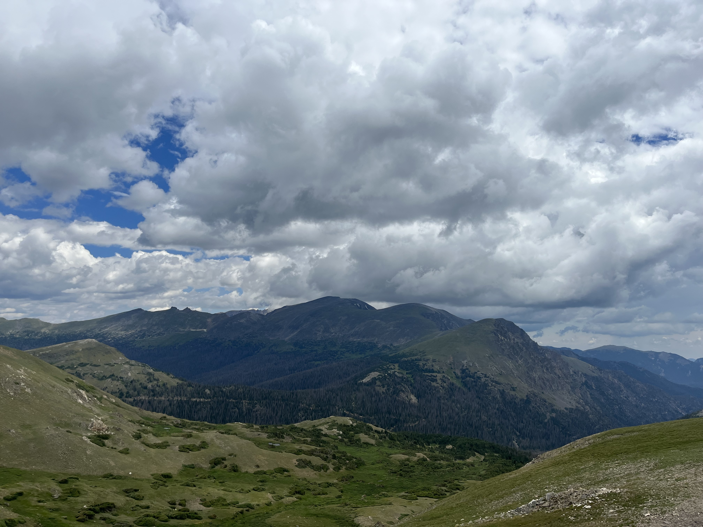

Hello There!
- Hi! I'm Ethan Oles an Information Science Student at Michigan State University.
- I am from Northville, Michigan and currently live in East Lansing, Michigan while attending school.
- My academic focuses include Web Development/Design and User Research.
- I am huge sports fanatic and also enjoy traveling to new places.
Experience With Web Development/Design and User Research
- Through college I have interacted with these careers through my courses and projects within them.
- In regards to Web Development and Design I have created smaller websites that achieve goals and serve their purpose. See Here
- Within User Research and User Experience I have created projects in relation to the contextual design process. See Here

Sports
- At Michigan State my love for sports continues as I try to attend as many sporting events that I possibly can.
- I also enjoy playing sports myself, mainly Basketball, Football, Soccer, or Tennis.
- I have even made a blog website about my Michigan State Basketball fandom. See Here


Travel
- Traveling is very important to me and I always want to go and see new places.
- I have been to over half of the states in the U.S. and to Countries such as Spain and Italy.
- In Michigan, I enjoy traveling up north to cities like Boyne City and Traverse City to go skiing during the winter.
- My most recent out of state adventure was in Summer of 2022 when visiting the Rocky Mountain, Arches, and Canyonlands national parks.


